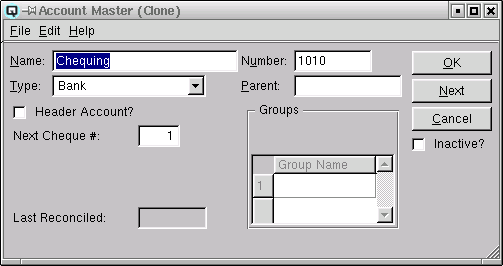
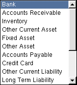
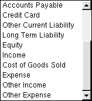
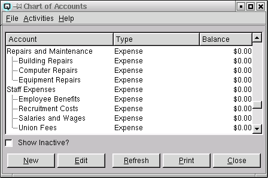
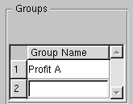

Account Master

Name
The name of the account.
Type
Select the type of account. This data is required by Quasar to refine
selections and to assist in the printing of financial statements.


-
- Bank - Identifies the account as a bank account.
- Accounts Receivable - Identifies the account as being a
receivable account. Receivable accounts are used for providing
customers with a line of credit. Multiple receivable accounts may be
defined. For example, you may wish to seperate regular receivables
from government or comercial receivables.
- Other Current Assets - Identifies the account as being a current
asset other than a bank type account or a receivable type account. A
prepaid bill is an example of a current asset.
- Fixed Asset - Identifies the account as being a fixed
asset. Fixed assets include such things a buildings and land.
- Other Asset - Identifies the account as being an asset other than
a current asset or a fixed asset.
- Accounts Payable - Identifies the account as being a payable
account. A payable account is used for the purchase of
products. Multiple payable accounts may be defined.
- Credit Card - Identifies the account as being a credit card
account (for company credit cards).
- Other Current Liability - Identifies the account as being a
current liability other than a payable account or a credit card
account. Federal tax payable is an example of a liability account.
- Long Term Liability - Identifies the account as being a long term
liability. A mortgage is an example of a long term liability.
- Equity - Identifies the account as being an equity
account. The share holder capital in a company.
- Income - Identifies the account as being a standard income
account. Sales accounts are all income account.
- Cost of Goods Sold - Identifies the account as a cost of goods
sold account. When a product is sold the inventory is reduced by the
cost of the goods sold. The cost of goods sold accounts keep track of
your total cost of sales.
- Expense - Identifies the account as being a standard
expense account. Expense accounts are for all expenses such a fuel,
power, water, rent and staff costs.
- Other Income - Identifies the account as being a non-standard
income account.
- Other Expense - Identifies the account as being a non-standard
expense account.
Header
Toggle on or off. Toggle on is the account is a header type account. A header account is a parent of active accounts within a group. The sample below
is an excerpt from the account list and shows an example of two parent
accounts where "Repairs and Maintenance" and "Staff Expenses" are parent accounts for the active accounts grouped below them.

Number
The account number. This is an optional attribute.
Parent
The parent or header account for an active account. Accounts are may be attached to a parent or header account as a method of grouping accounts for financial reporting.
Groups
Quasar provides the ability to link profit and loss type accounts
to one or more groups for the purpose of printing profit and loss
statements. Using Quasar you can:
-
- print consolidated financial statements
- print financial statements by store
- print profit and loss statements by group

Group Name
If required you can link an account to one or more groups. When a
profit and loss statement is printed by "Group" only the accounts
within the group will be displayed. For example, a company with two
storess has a service department and a sales department in each
store. While Quasar automatically provides the ability to produce
financial statements by store, the management may also wish to view the
overall profit and loss for either service or sales. To do so they can link the
service department accounts to a group called "Service" and they can link
the sales department accounts to a group called "Sales".
Last Reconciled
Quasar Accounting displays the date that the account was last reconciled.
Next Cheque#
The next cheque number that will be defaulted by Quasar for this account.
Inactive
Toggle on or off. Toggle on to set the account to be inactive. Quasar Accounting will not all an account with a balance to be set to inactive. Toggle on to re-activate an account.